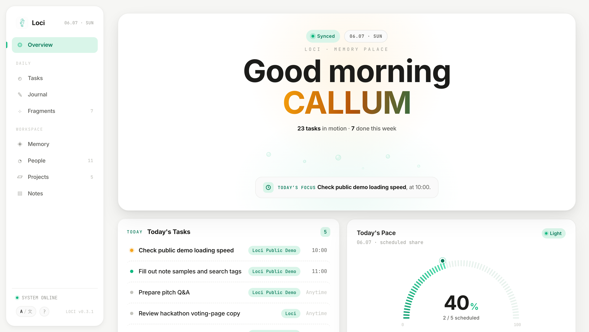

The agent-native memory system that gives your AI a real brain. Let's walk through how it works, what it does, and why it matters.
Every AI conversation starts from zero. You re-explain yourself, your project, your preferences. Context fills up. You restart. Everything is gone.
Loci solves this by giving your AI a persistent, structured memory — stored as plain Markdown files on your machine. Not a database. Not a cloud service. Just files you own.
It remembers across sessions, across projects, and across context resets. The longer you use it, the better it knows you.
Like your brain has working memory, short-term memory, and long-term storage — Loci uses a three-layer system to keep the right information in the right place.
Layer 1 loads instantly. Your AI enters state in milliseconds, not minutes of re-reading.
Layer 2 loads only what the current topic needs. No irrelevant context wasting tokens.
Layer 3 ensures nothing is ever lost. Searchable archives grow forever without affecting speed.
Just like the hippocampus decides what memories to surface — Loci decides what your AI should remember right now.
Extracts decisions, tasks, and insights from conversation. Never saves raw chat — only distilled knowledge.
Your brain is the hub, projects are spokes. Mistakes in Project A become warnings in Project B.
Start each day with: what happened yesterday, what's stale, what patterns you're repeating.
Session dies? Context full? Save and restart. Your AI picks up exactly where you left off.
Identity and goals evolve. Old versions are archived. Look back and see how you've changed.
Everything is Markdown in a git repo. git diff shows what your AI learned. Full version history.
Optional visual dashboard. Zero dependencies. Runs with node server.js.
Everything persists to your markdown files via a local API. The dashboard is a window into your brain, not a separate system.

Task management with drag-drop. Focus / Queue / Complete. Calendar timeline.
Week and month planning with independent goal tracking. Someday list.
Daily AI summaries + personal notes. Rich text editor. Weekly/monthly views.
Your identity, values, and growth — rendered from your markdown files.
Loci is agent-native — designed for AI agents that read and write files. The dashboard is optional. Everything works through conversation.
/save /plan /review /morning — natural commands for daily workflow. No GUI needed.
Identity, tasks, decisions, journal, people, finance, content — each a folder with its own README and structure.
| Feature | CLAUDE.md | ChatGPT Memory | Mem0 | Loci |
|---|---|---|---|---|
| Storage | 1 file | Cloud flat list | Cloud DB | Local Markdown |
| Structure | Flat | Flat | Key-value | 3-layer hierarchy |
| Cross-project | No | No | Partial | Full sync |
| Context-aware loading | No | No | No | Yes — layered |
| Privacy | Local | Cloud | Cloud | 100% local |
| Agent-native | Partial | No | API only | Built for agents |
| Task & workflow | No | No | No | Full system |
| Dashboard | No | No | No | Yes — optional |
| Version control | Git | No | No | Git-native |
Built for Claude Code. Zero config. Clone, run claude, start talking.
Use the adapter to connect your Loci brain to any AI-powered editor. Same memory, different interface.
Memory plugin that replaces OpenClaw's default memory system. One install command, and your lobster gets a real brain.
Works on macOS, Linux, and Windows (WSL). The setup script asks a few questions and configures everything in ~2 minutes.
Or clone manually: git clone https://github.com/codesstar/loci.git ~/loci && cd ~/loci && ./setup.sh
1. Claude reads your brain's CLAUDE.md and understands the system
2. It asks you a few questions about yourself (name, role, goals)
3. Your answers are saved to structured modules (me/identity.md, plan.md, etc.)
4. From now on, every conversation builds on what came before
5. Link your existing projects with one command: /loci-link
Open source. Agent-native. AI-first. The memory system that grows with you.